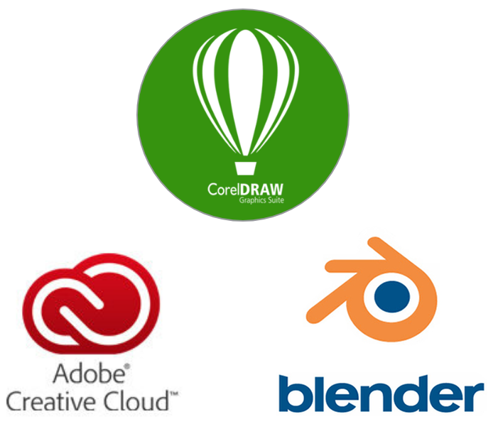

Quem sou eu?
Me chamo Douglas Alves da Silva, moro em Fortaleza, Ceará, mas nasci em Salvador, Bahia. Me formei Técnico em Informática pelo Instituto Federal de Ciência e Tecnologia do Ceará - IFCE em 2012, e atualmente estou cursando Sistemas
e Mídias Digitais na Universidade Federal do Ceará - UFC.
Hobbies
Gosto de assitir filmes, séries, animês, jogar vídeo games, board games e cardgames, ler mangás, escutar música, de desenhar e também de comer e cozinhar.

Software skills
Possuo experiências com os seguinte programas: Blender 3D, CorelDraw, Photoshop, Illustrator, Indesign, Experience Design, After Effects, Premiere.
Experiência profissional
Apple Developer Academy
UI/UX Designer, Ilustrador e Animador 2D - Janeiro de 2016/ Janeiro de 2018 Fortaleza, Brasil
LIT - Laboratório de Inovação Tecnológica (IFCE)
UI/UX Designer, Ilustrador e Animador 2D - Janeiro de 2015/ Janeiro de 2016 Fortaleza, Brasil